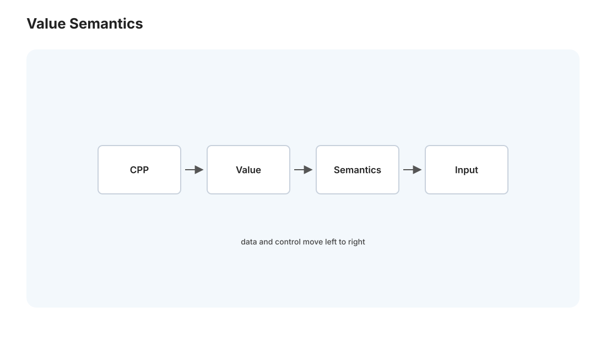
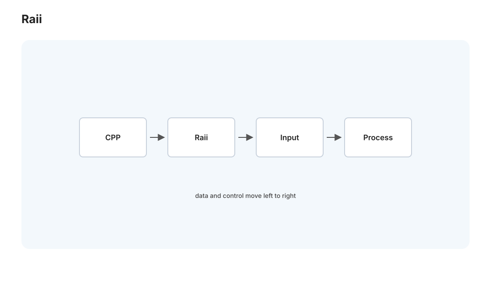
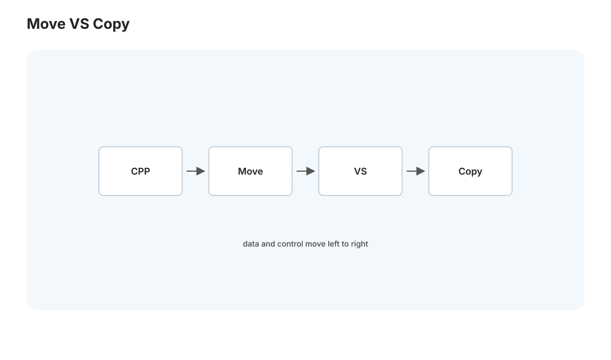

本页目录
C++ I · 抽象、RAII 与值/移动语义
对标：A Tour of C++（Stroustrup）/ Effective Modern C++（Meyers）｜ 前置：csapp-01/04（内存、指针）、pl-02（三条内存路线） C++ 是一门矛盾又强大的语言：贴近硬件到能写操作系统和游戏引擎，又提供高级抽象且承诺"零成本"。它是理解"如何在不牺牲性能的前提下抽象"的最佳教材，也是通往 Rust（rust 线）的桥——Rust 的所有权正是把 C++ 的 RAII 和移动语义变成编译器强制。这一页讲 C++ 的世界观：值语义、RAII（资源管理的核心创见）、移动语义、以及"零成本抽象"到底什么意思。
学习层：异常路径上，谁负责把资源还回去？
具体谜题：拷贝、移动与提前返回
一个函数获得文件句柄 fd=7，构造临时缓冲区后抛出异常；如果资源包裹在 RAII 对象里，句柄何时关闭？再把 std::vector<int> 从对象 a 移到 b，移动后 a 能否继续析构、能否继续被赋值？
先预测生命周期
预测：① 栈展开会按构造逆序调用析构，句柄只关闭一次；② 移动应转移资源所有权而非复制元素，源对象仍处于有效但未指定的状态；③ 原始指针本身没有析构协议，异常路径和所有权必须由类型或约定补上。
最小心智模型：值、资源、生命周期
C++ 把对象看成有构造、拷贝/移动和析构语义的值；RAII 把资源获得绑定到对象生存期。零成本抽象的关键不是“没有抽象成本”，而是可在编译期消除不需要的动态机制，同时让资源不变量由作用域结构承载。
形式机制与不变量
对资源句柄 \(r\)，RAII 不变量可写为：对象存活 \(\Leftrightarrow\) 它拥有的有效资源集合非空；析构后资源集合为空，且释放操作至多一次。若所有权从 \(a\) 移到 \(b\)，则 \(R_b'=R_a\)、\(R_a'=\varnothing\)，移动构造不改变资源总量。异常安全的 basic guarantee 保证不变量保持，strong guarantee 还要求失败时观察状态不变，no-throw move 让容器扩容可优先移动。
反例与失效边界
- 析构函数不应抛异常；跨 C API 的裸句柄、循环引用和自定义 deleter 仍可能破坏 RAII 设计。
- “移动后对象为空”不是所有类型的统一语义；只能依赖类型契约规定的有效状态，不能读取未指定内容。
- 共享所有权会引入引用计数、周期和同步开销；零成本抽象不承诺所有抽象都零成本。
迁移任务：审计一个系统资源接口
选一个 socket、文件、GPU buffer 或锁，写出获取、转移、复制、失败和析构状态图。用 cpp-01 的 RAII 改写，再与 rust-01 的所有权释放和 pl-02 的 GC 路线比较；用 L01/L07 的 benchmark 确认封装是否真的保持了目标性能。
无 JavaScript 时的静态读法：资源 fd=7 依次被对象 A 获得、对象 B 移动接管；异常发生时栈展开按“最后构造者先析构”的顺序释放，fd=7 只应关闭一次。移动后 A 仍可析构和重新赋值，但不能假设其中仍有原 buffer。交互版切换正常返回、异常和 move 路径，显示构造/移动/析构时间线与资源计数。
\n+
| 事件 | A 所有资源 | B 所有资源 | 资源总量 |
|---|---|---|---|
| 构造 A | fd=7 | 无 | 1 |
| move A→B | 空 | fd=7 | 1 |
| 析构 A/B | 空 | 释放 fd=7 | 0 |
\n+
\n+\n+## 1. C++ 的设计哲学:零成本抽象
C++ 的核心承诺——零成本抽象（zero-overhead abstraction）："你不用的东西不付代价，你用的东西手写也不会更快"。你能用高级抽象（类、模板、STL），编译后和手写底层 C 一样快（🔗 rust 也继承这个承诺）。这和 Python（py 线，抽象有解释开销）截然相反——C++ 的抽象在编译期展开、运行期不留痕迹。
代价是复杂：C++ 把内存、生命周期、拷贝的控制权全交给你——威力大、脚也容易打中。理解它的几个核心机制（值语义、RAII、移动）就能驾驭大半。
2. 值语义:对象就是值，不是引用

和 Python（py-01 变量是引用）、Java（对象是引用）不同，C++ 默认是值语义——变量就是对象本身，不是指向对象的引用：
Widget a; Widget b = a;b 是 a 的一份完整拷贝（调用拷贝构造函数），改 b 不影响 a。- 对象默认在栈上（
Widget w;不是new）——随作用域自动创建销毁，无需 GC（🔗 csapp-03 栈帧）。 - 要引用/间接，显式用引用
&或指针*。
后果：C++ 让你精确控制"拷贝还是共享"——这是性能的来源（无隐藏的堆分配、无 GC），也是复杂度的来源（要管拷贝成本、要懂什么时候发生拷贝）。"默认值语义 + 显式引用"是 C++ 内存模型的基石，理解它才能读懂 C++ 代码在做什么。
3. RAII:C++ 最伟大的创见

RAII（Resource Acquisition Is Initialization，资源获取即初始化）——把资源的生命周期绑定到对象的生命周期：构造函数获取资源（内存、文件、锁、连接），析构函数释放它；对象离开作用域时析构函数自动调用（🔗 csapp-03 栈展开）。
{
std::lock_guard<std::mutex> lock(mtx); // 构造：加锁
// ... 临界区 ...
} // 离开作用域，析构：自动解锁——哪怕中途抛异常也保证解锁
这解决了 C 的核心痛点（csapp-04）——手动 malloc/free、手动加锁解锁、手动关文件，极易忘记或在异常路径漏掉。RAII 让"作用域结束"自动触发清理，无论正常返回还是异常。智能指针是 RAII 管理内存的落地：
std::unique_ptr：独占所有权，离开作用域自动delete——无泄漏、无二次释放。std::shared_ptr：引用计数共享（🔗 pl-02、Python 的引用计数），最后一个引用消失才释放。- 现代 C++ 铁律：几乎不再手写
new/delete——用智能指针 + RAII 容器，内存 bug 大幅减少。
深远影响：RAII 是 C++ 对编程的重大贡献——"资源生命周期 = 对象生命周期 = 作用域"这个思想，Rust 的所有权（rust-01 的 drop）、Python 的 with（py-01）都是它的后裔。理解 RAII，你就理解了"确定性资源管理"这条区别于 GC 的路线（pl-02 的三条路线里，C++/Rust 走的正是这条）。
4. 移动语义:避免昂贵的拷贝

值语义（第 2 节）意味着拷贝——但拷贝一个持有大堆内存的对象（如装了百万元素的 vector）很贵。移动语义（C++11）解决之：当源对象是临时的/即将销毁的，不拷贝它的资源，而是"偷"过来（把内部指针转移、把源置空）——\(O(1)\) 而非 \(O(n)\)。
std::vector<int> make() { std::vector<int> v(1000000); return v; }
auto data = make(); // 不拷贝一百万元素，移动：偷走 v 的内部缓冲区
- 右值引用
&&：区分"临时对象"（可以偷）和"具名对象"（不能随便偷）。std::move显式把一个对象标记为"可移动"（你承诺不再用它）。 - 移动 vs 拷贝：拷贝 = 复制资源（安全但可能贵）；移动 = 转移资源所有权（快，但源对象被掏空）。
这正是通往 Rust 的桥（🔗 rust-01）：C++ 的移动是约定（std::move 后你不该再用源对象，但编译器不拦你——用了是 bug）；Rust 把移动变成默认 + 编译器强制（move 后编译器禁止你再用源对象）。C++ 教你移动语义为什么重要，Rust 把它做成不会出错的样子——两页对照读，所有权的价值就立体了。
5. C++ 的适用与代价
- 适用：性能关键 + 贴近硬件——操作系统、游戏引擎、高频交易、数据库内核（🔗 db 线）、嵌入式、编译器（🔗 comp 线 LLVM 本身是 C++）、ML 框架的 C++ 核心（🔗 mlsys，PyTorch 底层）。
- 代价：语言巨大复杂、几十年历史包袱、未定义行为（UB）陷阱多（悬垂引用、越界、数据竞争都是 UB，🔗 csapp-01 补码 UB）、编译慢、错误信息难读（模板尤甚，cpp-02）。
- 学习价值（对你）：C++ 让你在有抽象的同时仍直面内存和性能——比 C 高级、比 Python/Rust 更暴露底层控制。学它 + 对照 Rust，你会真正理解"抽象的成本"和"安全的代价"这两个系统编程的核心权衡。
6. 练习与要点
例 1（RAII 对比手动） 写一段"打开文件—处理—中途可能抛异常"的代码，对比手动 fopen/fclose（异常路径漏关）vs RAII 的 std::ifstream（自动关）——理解 RAII 为什么让资源管理"异常安全"，C 的痛在这里被治好。
例 2（拷贝 vs 移动） 给一个持有大 vector 的类，观察"返回临时对象"触发移动（快）而"拷贝具名对象"触发拷贝（慢）——用计数器或计时验证。移动语义省的那次 \(O(n)\) 拷贝亲眼可见。
例 3（对照 Rust） 把本页的移动语义和 rust-01 的所有权并读：C++ std::move 后用源对象是"合法但错"，Rust move 后用源对象是"编译错误"——理解"约定 vs 强制"的区别，这就是 Rust 存在的理由。\(\blacksquare\)
下一页：C++ II——现代 C++、STL、模板与并发：标准库的容器与算法、模板泛型编程、以及 C++ 的并发工具与陷阱。